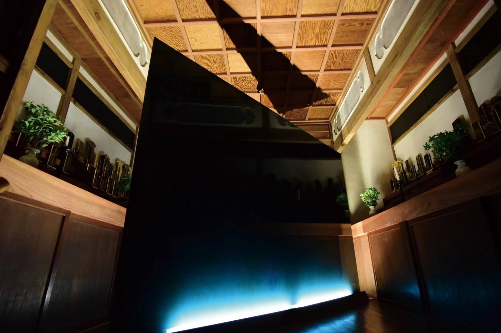

Discussing the Cliff Edge Project
October 12, 2015 / Keigetsuzan Chokoji Temple
Ninsho Kakinuma / Kohei Sumi × Yohei Kurose / talk session with project collaborators

Scars of the Peninsula (2015) opened the memories of the Tanna Basin, which had been folded into the exhibition space in the previous year’s Memories of Tanna, back out into the basin itself. KURUBUSHI-BASE on the northwest side of the Tanna Fault and Keigetsuzan Chokoji Temple on the southeast side were conceived as two protective housings for wedge-shaped monuments indicating the direction of the fault’s lateral displacement. In the 1930 North Izu Earthquake, the west side of the fault shifted south and the east side north; this actual crustal movement determined the placement and direction of the works. Moving between the two sites expanded the viewer’s scale of imagination from the body to the basin and further to the Izu Peninsula.
The wedge-shaped monuments brought together three backgrounds: an earlier idea for a minimal wall, the massive seawall of the Hamaoka Nuclear Power Plant seen after the Great East Japan Earthquake, and the lateral displacement of the Tanna Fault. Even the seawall—22 meters high and 1.6 kilometers long—appeared in aerial photographs as a thin band along the Pacific coast. The sense that a huge human-made structure could appear fragile before the scale of nature transformed the wall into a wedge indicating geological force. Their fault-facing surfaces used polished Otsu plaster under the supervision of Hirokazu Shiraishi and roiro-polished urushi made by me, layering mirror finishes produced by human hands with the geological “fault mirror” created as rock masses grind against one another underground.
During the exhibition, a dialogue with Yohei Kurose, a geology lecture by Masato Koyama, and geotours were held. On the final day, the Chokoji monument was ritually burned after chanting and a soul-removal rite by Chief Priest Kakinuma; the KURUBUSHI-BASE monument was likewise ritually deconsecrated, then cut apart with a diamond cutter and distributed to visitors as keepsakes. Rather than preserving the work permanently, the exhibition included its appearance in the site, the time shared there, and its final disappearance or dispersal. This became decisive for the subsequent direction of the Cliff Edge Project.
《半島の傷跡》（2015年）は、前年の《丹那の記憶》で展示室に折り畳んだ丹那盆地の記憶を、再び盆地そのものへ開いた展覧会である。丹那断層の北西側にあるKURUBUSHI-BASEと、南東側の渓月山 長光寺を二つの鞘堂に見立て、断層の横ずれ方向を示す楔形のモニュメントを設置した。1930年の北伊豆地震では断層の西側は南へ、東側は北へずれており、その地殻変動が作品の配置と方向を決めた。二会場を移動することで、身体から盆地、さらに伊豆半島へと想像力の尺度を広げる構造とした。
楔形のモニュメントには、一枚のミニマルな壁、東日本大震災後に見た浜岡原子力発電所の巨大な防波壁、丹那断層の横ずれという三つの背景が重なっている。高さ22メートル、全長1.6キロメートルの防波壁さえ、空撮では海岸線に沿う薄い帯に見えた。人間の巨大な構造物が自然のスケールの前では脆弱に見える感覚が、壁を地質的な力を示す楔へ変えていった。断層側の面には白石博一監修の漆喰の大津磨きと、私による漆の呂色磨きを用い、人の手で生まれる鏡面と、岩盤が擦れ合って生じる「断層鏡面」を重ねた。
会期中には黒瀬陽平との対談、小山真人による地質講演、ジオツアーを実施した。最終日、長光寺のモニュメントは柿沼住職による読経と魂抜きの後にお焚き上げされ、KURUBUSHI-BASEのモニュメントは魂抜きの後、ダイヤモンドカッターで切り分け、断片を来場者へ「形見分け」した。作品を恒久的に残すのではなく、場所に現れ、時間を共有し、最後に消滅・分有されるところまでを展覧会の形式に含めたことは、その後のCliff Edge Projectの方向を決定づけた。
October 12, 2015 / Keigetsuzan Chokoji Temple
Ninsho Kakinuma / Kohei Sumi × Yohei Kurose / talk session with project collaborators
October 17, 2015 / Kannami Rural Environment Improvement Center
Lecture: geologist Masato Koyama
October 18 & 24, 2015
Izu Peninsula Geopark geoguides
2015年10月12日 / 渓月山 長光寺
柿沼忍昭 / 住康平 × 黒瀬陽平 / プロジェクト協力者によるトークセッション
2015年10月17日 / 函南町農村環境改善センター
2015年10月18日・24日
伊豆半島ジオパークジオガイド
October 24, 2015 / Keigetsuzan Chokoji Temple
The monument was ignited after a ritual performed by Chief Priest Kakinuma.
October 24, 2015 / KURUBUSHI-BASE
The monument was cut into sections and distributed to participants as keepsakes.
2015年10月24日 / 渓月山 長光寺
柿沼住職による儀礼の後、モニュメントに点火した。
2015年10月24日 / KURUBUSHI-BASE
モニュメントを切り分け、作品の断片を参加者へ手渡した。